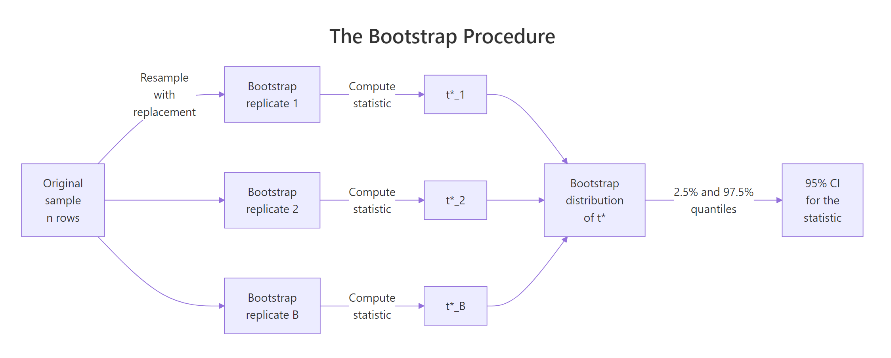
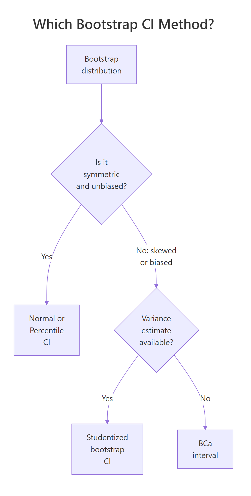
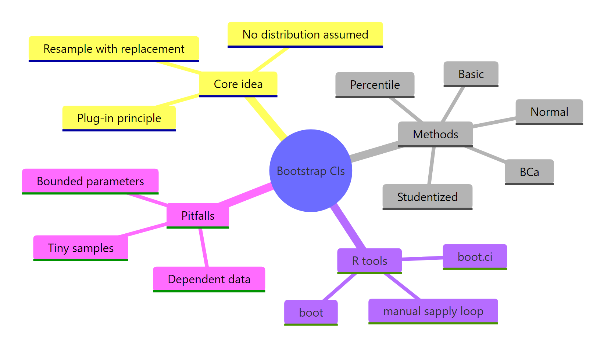

Bootstrap CIs in R: Distribution-Free Confidence Intervals for Any Statistic
Bootstrap confidence intervals estimate uncertainty by resampling your data with replacement, no distributional assumptions required. This lets you wrap a CI around almost any statistic, a median, a correlation, a custom ratio, using the same few lines of R code.
How does bootstrapping build a confidence interval?
Classical confidence intervals need a formula for the sampling distribution of your statistic. That formula exists for a mean but not for a median, a trimmed mean, or a ratio of regression coefficients. The bootstrap sidesteps the problem. You pretend your sample is the population, draw new samples from it, recompute your statistic each time, and read the CI straight off the resulting distribution.
Let's see the payoff first. Here is a 95% percentile bootstrap CI for the Spearman correlation between sepal length and petal length in the iris dataset, a statistic for which no clean closed-form interval exists.
The point estimate boot_corr$t0 is the Spearman correlation on the original sample. The CI [0.848, 0.901] is the 2.5% and 97.5% quantiles of 2,000 bootstrap replicates. No normality, no Fisher z-transformation, no asymptotic arguments, just resampling.

Figure 1: The bootstrap resamples with replacement, computes the statistic on each replicate, and reads the CI from the resulting distribution.
To see what boot() is doing under the hood, let's build a bootstrap CI for the median of iris$Sepal.Length manually. No packages, just sample() and replicate().
Two lines of real work: resample with replacement (sample(..., replace = TRUE)) and compute the statistic (median(resample)). The 2.5% and 97.5% quantiles of the 2,000 replicate medians give the 95% CI. Everything the boot package does is a generalisation of this four-line recipe.
Try it: Compute a 95% percentile CI for the median of iris$Petal.Width using the manual approach (no boot package). Use 2,000 replicates and set.seed(7).
Click to reveal solution
Explanation: replicate() runs the same expression ex_B times and collects the results. Each iteration draws a resample of size n with replacement and computes its median. The 2.5% and 97.5% quantiles bound the central 95% of the bootstrap distribution.
How do I run a bootstrap with the boot package?
The boot() function is the workhorse. It takes your data, a statistic function, and R replicates, then does all the resampling and bookkeeping for you. The one thing people trip over is the statistic function's signature: it must accept an index vector as its second argument. boot() passes the resample indices, and you use them to subset the data.
boot() returns an object with three pieces worth knowing. $t0 is the statistic on the original data (5.843). $t is a vector of the 2,000 bootstrap replicates. bias is the mean of $t minus $t0, which should be near zero for a well-behaved statistic. std. error is the SD of $t, which equals the bootstrap standard error of your estimate.
Seeing the bootstrap distribution makes the CI concept click. Here is a base-R histogram of the 2,000 replicate means with the 2.5% and 97.5% percentiles marked.
The dashed red lines are the percentile CI bounds. The blue line is the point estimate. The distribution looks roughly normal because the mean is well-behaved for large samples, which is the Central Limit Theorem doing its job. For less well-behaved statistics (median, correlation, ratio), the bootstrap distribution is often skewed and the choice of CI method starts to matter.
Try it: Write a function var_fn(d, i) that returns the sample variance, then bootstrap it on iris$Sepal.Width with R = 2000 and set.seed(11). Save the bootstrap object to ex_boot_var.
Click to reveal solution
Explanation: Same (d, i) pattern as the mean. Only the statistic inside the function changes. The point estimate t0 is 0.190, with a bootstrap SE of roughly 0.020.
Which bootstrap CI method should I choose?
boot.ci() returns up to five interval types. They are not interchangeable. The right choice depends on the shape of your bootstrap distribution and whether your statistic is biased.
All four intervals are nearly identical here because the bootstrap distribution of the mean is close to symmetric and unbiased. That agreement is itself a diagnostic: when methods disagree by more than a couple of percent, something non-normal is happening and the choice matters.

Figure 2: Pick percentile or normal when the bootstrap distribution is symmetric, BCa when it is skewed or biased, studentized when you have a per-replicate variance.
Here is how the five methods compare:
| Method | type = |
Assumes | Prefer when |
|---|---|---|---|
| Normal | "norm" |
Bootstrap distribution is approximately normal, no bias | Simple statistics, large samples |
| Basic (pivotal) | "basic" |
Statistic distribution is constant shape | Legacy default, rarely preferred alone |
| Percentile | "perc" |
Statistic transforms monotonically | Quick, intuitive, good default for symmetric distributions |
| Studentized | "stud" |
Per-replicate variance available | Best coverage when you can compute variances |
| BCa | "bca" |
None beyond plug-in principle | Skewed bootstrap distributions, biased estimators |
type = "stud") needs a per-replicate variance estimate. Your statistic function must return BOTH the statistic and its variance, and boot() needs a two-stage resample or a nested bootstrap. Skip it unless you can compute the variance analytically. Otherwise use BCa, it gives similar coverage with less plumbing.Try it: Run boot.ci() on boot_mean with type = "all" and identify which single interval is the widest. Which method is it?
Click to reveal solution
Explanation: Normal is typically widest by a hair when the bootstrap distribution has slightly heavier tails than a Gaussian, because it uses 1.96 * SE rather than empirical quantiles. Here all four are within 0.002, negligible for practical reporting.
When does BCa give better intervals than percentile?
BCa stands for "bias-corrected and accelerated." It adjusts the percentile interval for two quantities: bias (the bootstrap distribution is systematically off-centre from the sample estimate) and acceleration (the rate at which the standard error of the statistic changes with the true parameter value). Percentile CIs assume both are zero. BCa estimates them from the data.
If you're not interested in the math, skip to the code below, the practical rule is "use BCa when your bootstrap distribution is skewed or your statistic is biased."
BCa shifts the percentile lookup. Instead of reading off the 2.5% and 97.5% quantiles, BCa reads off
$$\alpha_1 = \Phi\!\left(\hat{z}_0 + \frac{\hat{z}_0 + z_{\alpha/2}}{1 - \hat{a}(\hat{z}_0 + z_{\alpha/2})}\right), \qquad \alpha_2 = \Phi\!\left(\hat{z}_0 + \frac{\hat{z}_0 + z_{1-\alpha/2}}{1 - \hat{a}(\hat{z}_0 + z_{1-\alpha/2})}\right)$$
Where:
- $\hat{z}_0$ = the bias-correction factor, estimated from the proportion of bootstrap replicates below the sample statistic
- $\hat{a}$ = the acceleration factor, estimated via jackknife (how much the SE changes with the parameter)
- $z_{\alpha/2}$ = the standard normal quantile at $\alpha/2$
- $\Phi$ = the standard normal CDF
When $\hat{z}_0 = 0$ and $\hat{a} = 0$, BCa reduces to the percentile method. When either is non-zero, BCa shifts the interval to correct the distortion.
The practical payoff shows up on skewed statistics. Let's bootstrap the variance of mtcars$mpg, a statistic whose bootstrap distribution is right-skewed.
Two things to notice. The bootstrap bias is negative, the bootstrap replicates are centred slightly below the original estimate because variance is a downward-biased function under resampling. The percentile CI is [22.2, 52.1] while the BCa CI is [25.1, 57.1], shifted about 3 units to the right. BCa corrects for the skew, giving a CI that better matches the true coverage at the 95% level.
Try it: Bootstrap the 90th percentile of mtcars$hp with R = 5000. Compute both percentile and BCa CIs. Which is wider?
Click to reveal solution
Explanation: The 90th percentile's bootstrap distribution is mildly right-skewed because the sample has a few high-horsepower cars that appear in some resamples and not others. BCa nudges the upper bound slightly higher than percentile.
How do I bootstrap any custom statistic?
The real power of the bootstrap is that it bends to your problem. Anything you can compute in R from a resampled data frame can become a CI. Regression coefficients, differences of medians, odds ratios, Gini coefficients, anything.
A common non-standard statistic is the ratio of mean to median, a skewness proxy. No textbook formula exists for its CI. The bootstrap produces one in three lines.
The point estimate 1.046 means mpg's mean is about 5% higher than its median, modest right-skew. The CI [1.007, 1.089] excludes 1.000, so we can say the right-skew is plausible at the 95% level. That conclusion required zero theory beyond the bootstrap plug-in principle.
Passing a full data frame to boot() unlocks multi-column statistics. Here is a difference in medians between automatic and manual transmissions in mtcars, a statistic with no standard closed-form CI.
Manual transmissions median 5.9 mpg higher than automatic, with a 95% BCa CI of [1.1, 11.0]. The CI excludes zero, so the median difference is plausibly non-zero at the 95% level. Note the function signature: when you pass a data frame, boot() resamples WHOLE ROWS via d[i, ], preserving the pairing between mpg and am.
boot() resamples rows, not columns. This preserves within-row relationships (such as mpg staying matched to its am value). If you passed columns independently, you would destroy correlations, which ruins every multi-column bootstrap. Always subset with d[i, ], not data.frame(d$x[i], d$y[i]).Try it: Bootstrap the coefficient of variation (sd(x) / mean(x)) for mtcars$mpg with R = 2000. Report the 95% BCa CI. Save to ex_cv_ci.
Click to reveal solution
Explanation: The CV compares spread to level. A point estimate of about 0.3 means the standard deviation is 30% of the mean. The CI quantifies how precisely we know that ratio.
When does the bootstrap fail?
The bootstrap is powerful, not magic. Three situations break it. Knowing them saves you from shipping a confidently wrong interval.
- Dependent data (time series, clustered data, spatial data). Independent row resampling destroys the dependence structure, so the bootstrap SE is too small and CIs are too narrow.
- Tiny samples (n < ~20). The "population" you resample from is too coarse. Bootstrap CIs underestimate the true variability when the sample barely represents the distribution.
- Bounded or extreme statistics (sample minimum, maximum, boundary values). The bootstrap can never resample a value the original sample did not contain, so CIs for these statistics are fundamentally broken.
The dependence problem is the most common real-world failure. Let's simulate an AR(1) time series and show that a naive bootstrap gives a CI that's too narrow.
The block bootstrap CI is about 2.5x wider because it preserves the autocorrelation structure, long runs stay long. The naive bootstrap throws that structure away and produces an overconfident CI. For any time series, use tsboot() with a sensible block length (l), typically round(n^(1/3)) or larger.
tsboot() with a block length, not plain boot(). Plain boot() assumes independent observations. If consecutive rows are correlated (time series, repeated measures, clustered data), your bootstrap SEs will be too small and your CIs too narrow. tsboot() with l > 1 fixes this for stationary time series.Try it: Draw 10 values from rnorm(10), then bootstrap the sample maximum. Compare the bootstrap 97.5% percentile with the sample maximum itself. What does this reveal about bootstrap failure on extreme statistics?
Click to reveal solution
Explanation: The upper bound of the percentile CI equals the sample maximum exactly. The bootstrap cannot resample a value larger than anything in the original sample, so the CI is pinned at the sample max regardless of the true population max. For extreme-value statistics, use extreme-value theory instead.
Practice Exercises
The inline exercises above covered single concepts. These capstones combine multiple ideas, define custom functions, work with data frames, apply boot.ci() types, and interpret output against failure modes.
Exercise 1: BCa CI for the IQR of mtcars$hp
Bootstrap a 95% BCa CI for the interquartile range (IQR) of mtcars$hp with 5,000 replicates. Save the CI output to my_iqr_ci.
Click to reveal solution
Explanation: IQR is a robust spread measure. Its bootstrap distribution is often skewed (fewer low values, more high), so BCa is preferred over percentile. The wide CI reflects the small sample (n = 32).
Exercise 2: CI for the ratio of Pearson correlations
Build a 95% BCa CI for the ratio of two Pearson correlations, cor(mpg, hp) / cor(mpg, wt), on the mtcars dataset, with 5,000 replicates. Save to my_ratio_ci. This is a ratio of correlations with no closed-form CI, the bootstrap handles it in three lines.
Click to reveal solution
Explanation: Both correlations are negative (mpg drops with hp and wt), and their ratio near 1 means they predict mpg with similar strength. The CI spans 1.0, so we cannot conclude one is meaningfully stronger than the other at the 95% level.
Exercise 3: Stratified bootstrap by Species
For iris, produce a 95% percentile CI for the median Sepal.Length separately for each Species. Use stratified resampling so each bootstrap replicate keeps the same 50-per-species composition. Save to my_species_cis as a list or data frame. Hint: use the strata argument of boot().
Click to reveal solution
Explanation: strata = iris$Species ensures each bootstrap replicate contains exactly 50 rows per species, matching the original design. Without stratification, some replicates would have, say, 60 setosas and 40 virginicas, distorting the per-species CIs. index = k tells boot.ci() which element of the three-vector statistic to build a CI for.
Complete Example: Treatment vs Control in a Small Trial
A clinical analyst has recovery-day data on 12 treatment and 12 control patients in a pilot study. They want a 95% CI for the difference in median recovery days. No standard formula gives this directly, the bootstrap does it in one workflow.
The treatment group recovers a median 2.94 days faster. The 95% BCa CI is [-4.98, -0.55], which excludes zero, so the treatment effect is plausibly negative (shorter recovery) at the 95% level. Note the strata = recovery$arm argument: it preserves the 12-per-arm design in every resample, which matters for small stratified samples.
The bulk of the bootstrap distribution sits to the left of zero, visualising why the CI excludes it. If the distribution straddled zero, we would fail to reject "no difference" at the 95% level. The bootstrap reproduces the hypothesis-test conclusion and gives you effect-size bounds at the same time.
Summary
Bootstrap confidence intervals are the Swiss-army knife of inference. They work for any statistic you can compute in R and make no distributional assumptions. The core recipe is four lines of code: define a statistic function, call boot(), call boot.ci(), read the interval.
| Method | Best for | Avoid when |
|---|---|---|
| Percentile | Symmetric bootstrap distributions, quick defaults | Skewed distributions, biased estimators |
| BCa | Skewed or biased statistics (median, variance, ratio) | R < 5,000 replicates |
| Studentized | Highest accuracy when per-replicate variance is available | Variance is hard to compute |
| Normal | Large samples, near-Gaussian bootstrap distributions | Anything skewed |
| Basic | Legacy comparisons, rarely preferred alone | Most modern workflows |
Three pitfalls: don't use plain boot() on dependent data (use tsboot()), don't trust the bootstrap on tiny samples (n < 20), and don't bootstrap extreme-value statistics like the maximum.

Figure 3: Bootstrap CIs at a glance: core idea, methods, R tools, and common pitfalls.
References
- Efron, B. & Tibshirani, R. (1994). An Introduction to the Bootstrap. CRC Press. The canonical textbook, covers BCa in depth.
- Canty, A. & Ripley, B. (2024).
boot: Bootstrap Functions (Originally by Angelo Canty for S). CRAN. Link - Davison, A.C. & Hinkley, D.V. (1997). Bootstrap Methods and their Application. Cambridge University Press. Companion text for the
bootpackage. - DiCiccio, T.J. & Efron, B. (1996). Bootstrap Confidence Intervals. Statistical Science, 11(3), 189-228.
- Carpenter, J. & Bithell, J. (2000). Bootstrap confidence intervals: when, which, what? A practical guide for medical statisticians. Statistics in Medicine, 19(9), 1141-1164.
- Hesterberg, T.C. (2015). What Teachers Should Know About the Bootstrap. The American Statistician, 69(4), 371-386.
- Rousselet, G.A., Pernet, C.R., & Wilcox, R.R. (2021). The Percentile Bootstrap: A Primer With Step-by-Step Instructions in R. Advances in Methods and Practices in Psychological Science, 4(1).
boot.cifunction reference. RDocumentation. Link
Continue Learning
- Confidence Intervals in R, the classical parametric foundations the bootstrap generalises. Read this first if the word "sampling distribution" is fuzzy.
- Hypothesis Testing in R, how CIs relate to tests. A 95% bootstrap CI excluding the null value is equivalent to rejecting H0 at $\alpha = 0.05$.
- Point Estimation in R, bias, variance, and MSE. The bootstrap is the practical tool for estimating exactly these properties for any statistic.